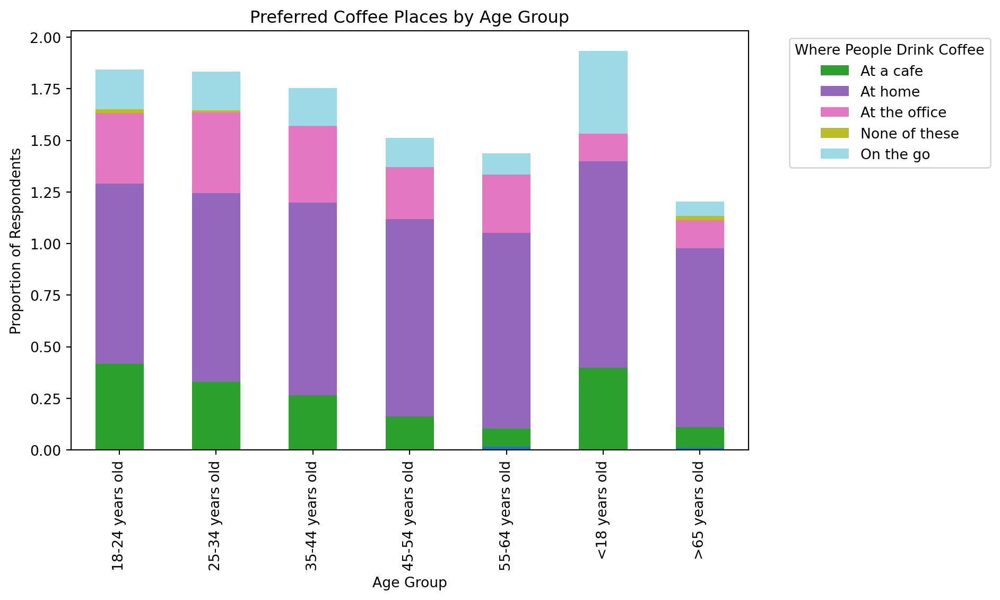
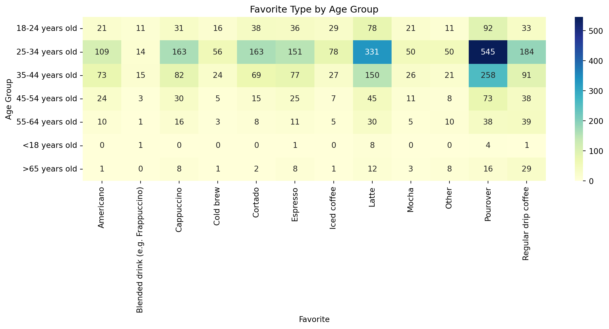

Show code
import matplotlib.pyplot as plt
import pandas as pd
import plotly.express as px
import seaborn as sns
df = pd.read_csv("../../../../data/coffee_survey.csv")Pawatsada Sanlom
July 9, 2025
1.1 Import modules and dataset
1.2 Data Exploration
| Unnamed: 0 | age | cups | where_drink | purchase_other | favourite | favorite_specify | additions | additions_other | sweetener | ... | most_paid | most_willing | value_cafe | spent_equipment | value_equipment | gender | education_level | employment_status | number_children | political_affiliation | |
|---|---|---|---|---|---|---|---|---|---|---|---|---|---|---|---|---|---|---|---|---|---|
| 0 | 1 | <18 years old | 3 | At home, At the office, At a cafe | NaN | Pourover | NaN | No - just black, Milk, dairy alternative, or c... | NaN | NaN | ... | NaN | NaN | NaN | NaN | NaN | Other (please specify) | Bachelor's degree | Employed full-time | More than 3 | Democrat |
| 1 | 2 | >65 years old | 3 | At the office, At a cafe | NaN | Cortado | NaN | No - just black | NaN | NaN | ... | NaN | NaN | NaN | NaN | NaN | NaN | NaN | NaN | NaN | NaN |
| 2 | 3 | 25-34 years old | 1 | At home, At the office, On the go | NaN | Regular drip coffee | NaN | Milk, dairy alternative, or coffee creamer, Su... | NaN | Granulated Sugar, Brown Sugar | ... | NaN | NaN | NaN | NaN | NaN | Female | Bachelor's degree | Employed full-time | NaN | Democrat |
| 3 | 4 | 18-24 years old | 2 | At the office | NaN | Iced coffee | NaN | Milk, dairy alternative, or coffee creamer | NaN | NaN | ... | NaN | NaN | NaN | NaN | NaN | NaN | NaN | NaN | NaN | NaN |
| 4 | 5 | 45-54 years old | 2 | At home, At the office, At a cafe, On the go | NaN | Regular drip coffee | NaN | No - just black | NaN | NaN | ... | $4-$6 | $8-$10 | No | $500-$1000 | Yes | Male | Master's degree | Employed full-time | 2 | No affiliation |
| 5 | 6 | >65 years old | 1 | At home | NaN | Regular drip coffee | NaN | No - just black | NaN | NaN | ... | NaN | NaN | NaN | NaN | NaN | NaN | NaN | NaN | NaN | NaN |
| 6 | 7 | 25-34 years old | 2 | At home, At the office | NaN | Pourover | NaN | No - just black | NaN | NaN | ... | $2-$4 | More than $20 | Yes | $50-$100 | Yes | Male | Master's degree | Unemployed | NaN | Independent |
| 7 | 8 | 35-44 years old | 1 | At the office, At home | NaN | Iced coffee | NaN | No - just black | NaN | NaN | ... | $10-$15 | More than $20 | Yes | $100-$300 | Yes | Male | Bachelor's degree | Employed full-time | 3 | No affiliation |
| 8 | 9 | 45-54 years old | More than 4 | At home | NaN | Pourover | NaN | No - just black | NaN | NaN | ... | $10-$15 | $15-$20 | Yes | $300-$500 | Yes | Male | Bachelor's degree | Employed full-time | 3 | No affiliation |
| 9 | 10 | 35-44 years old | 1 | At the office, At a cafe, At home | NaN | Cappuccino | NaN | Milk, dairy alternative, or coffee creamer, Su... | NaN | Granulated Sugar, Brown Sugar | ... | NaN | NaN | NaN | NaN | NaN | NaN | NaN | NaN | NaN | NaN |
10 rows × 43 columns
Age exploration
1.3 Data Filtering
| age | where_drink | favourite | style | |
|---|---|---|---|---|
| 0 | <18 years old | At home, At the office, At a cafe | Pourover | Bright |
| 1 | >65 years old | At the office, At a cafe | Cortado | Fruity |
| 2 | 25-34 years old | At home, At the office, On the go | Regular drip coffee | Sweet |
| 3 | 18-24 years old | At the office | Iced coffee | Nutty |
| 4 | 45-54 years old | At home, At the office, At a cafe, On the go | Regular drip coffee | Floral |
| 5 | >65 years old | At home | Regular drip coffee | Full Bodied |
| 6 | 25-34 years old | At home, At the office | Pourover | Floral |
| 7 | 35-44 years old | At the office, At home | Iced coffee | Fruity |
| 8 | 45-54 years old | At home | Pourover | Full Bodied |
| 9 | 35-44 years old | At the office, At a cafe, At home | Cappuccino | Nutty |
2.1 Preferred Coffee Places by Age Group
#Manage “where_drink” : spliting words
| age | where_drink | favourite | style | where_list | |
|---|---|---|---|---|---|
| 0 | <18 years old | At home, At the office, At a cafe | Pourover | Bright | [At home, At the office, At a cafe] |
| 1 | >65 years old | At the office, At a cafe | Cortado | Fruity | [At the office, At a cafe] |
| 2 | 25-34 years old | At home, At the office, On the go | Regular drip coffee | Sweet | [At home, At the office, On the go] |
| 3 | 18-24 years old | At the office | Iced coffee | Nutty | [At the office] |
| 4 | 45-54 years old | At home, At the office, At a cafe, On the go | Regular drip coffee | Floral | [At home, At the office, At a cafe, On the go] |
#Manage “where_drink” : exploding and making them to list then one-hot for the list
| age | where_drink | favourite | style | where_list | At a cafe | At home | At the office | None of these | On the go | ||
|---|---|---|---|---|---|---|---|---|---|---|---|
| 0 | <18 years old | At home, At the office, At a cafe | Pourover | Bright | [At home, At the office, At a cafe] | 0 | 1 | 1 | 1 | 0 | 0 |
| 1 | >65 years old | At the office, At a cafe | Cortado | Fruity | [At the office, At a cafe] | 0 | 1 | 0 | 1 | 0 | 0 |
| 2 | 25-34 years old | At home, At the office, On the go | Regular drip coffee | Sweet | [At home, At the office, On the go] | 0 | 0 | 1 | 1 | 0 | 1 |
| 3 | 18-24 years old | At the office | Iced coffee | Nutty | [At the office] | 0 | 0 | 0 | 1 | 0 | 0 |
| 4 | 45-54 years old | At home, At the office, At a cafe, On the go | Regular drip coffee | Floral | [At home, At the office, At a cafe, On the go] | 0 | 1 | 1 | 1 | 0 | 1 |
#Manage “where_drink” : exploring mean for each group of age
| At a cafe | At home | At the office | None of these | On the go | ||
|---|---|---|---|---|---|---|
| age | ||||||
| 18-24 years old | 0.002398 | 0.414868 | 0.872902 | 0.342926 | 0.016787 | 0.194245 |
| 25-34 years old | 0.001055 | 0.329641 | 0.912975 | 0.390295 | 0.011603 | 0.188291 |
| 35-44 years old | 0.001095 | 0.265060 | 0.933187 | 0.369113 | 0.003286 | 0.181818 |
| 45-54 years old | 0.000000 | 0.161972 | 0.957746 | 0.250000 | 0.000000 | 0.140845 |
| 55-64 years old | 0.017045 | 0.085227 | 0.948864 | 0.284091 | 0.000000 | 0.102273 |
#Stacked bar plot
groupby_age.plot(kind='bar', stacked=True, figsize=(10,6), colormap='tab20')
plt.title('Preferred Coffee Places by Age Group')
plt.ylabel('Proportion of Respondents')
plt.xlabel('Age Group')
plt.legend(title='Where People Drink Coffee', bbox_to_anchor=(1.05, 1), loc='upper left')
plt.tight_layout()
plt.show()
2.2 Preferred Type of Coffee by Age Group
#Group favourite by Age
#Heatmap

2.3 Preferred Style of Coffee by Age Group
#Group Style by Age
Grouped bar plt
---
title: Coffee Survey
author: Pawatsada Sanlom
date: July 9, 2025
# Objective: Considering age, where to drink, favourite, and style of drinking coffee to help starting new business
warning: false
#######image: tb.png
format:
html:
code-fold: true
code-summary: "Show code"
code-tools: true
categories: [Python, 25Winter, "data: coffee_survey.csv"]
---
## 1.Introduction
**1.1 Import modules and dataset**
```{python}
import matplotlib.pyplot as plt
import pandas as pd
import plotly.express as px
import seaborn as sns
df = pd.read_csv("../../../../data/coffee_survey.csv")
```
**1.2 Data Exploration**
```{python}
df.head(10)
```
Age exploration
```{python}
sns.catplot(data = df, x = "age", kind="count", height=5, aspect=2)
```
* Age 25 to 34 range is the highest age range among coffee customers.
**1.3 Data Filtering**
```{python}
df_focused = df[["age", "where_drink", "favourite", 'style']].copy()
df_focused.head(10)
```
* Focusing on 4 attributes including age, where to drink, favourite, and style of drinking coffee.
## 2. Data Analysis
**2.1 Preferred Coffee Places by Age Group**
#Manage "where_drink" : spliting words
```{python}
df_focused['where_drink'] = df_focused['where_drink'].fillna('')
df_focused['where_list']=df_focused['where_drink'].str.split(pat=", ")
df_focused.head()
```
#Manage "where_drink" : exploding and making them to list then one-hot for the list
```{python}
df_exploded = df_focused.explode('where_list')
dummies = pd.crosstab(df_exploded.index, df_exploded['where_list'])
df_final = df_focused.join(dummies.groupby(dummies.index).sum())
df_final.head()
```
#Manage "where_drink" : exploring mean for each group of age
```{python}
groupby_age = df_final.groupby('age')[df_final.select_dtypes(include='number').columns].mean()
groupby_age.head()
```
#Stacked bar plot
```{python}
groupby_age.plot(kind='bar', stacked=True, figsize=(10,6), colormap='tab20')
plt.title('Preferred Coffee Places by Age Group')
plt.ylabel('Proportion of Respondents')
plt.xlabel('Age Group')
plt.legend(title='Where People Drink Coffee', bbox_to_anchor=(1.05, 1), loc='upper left')
plt.tight_layout()
plt.show()
```
**2.2 Preferred Type of Coffee by Age Group**
#Group favourite by Age
```{python}
favourite_by_agegroup = df_focused.groupby('age')['favourite'].value_counts().unstack().fillna(0)
```
#Heatmap
```{python}
plt.figure(figsize=(12, 6))
sns.heatmap(favourite_by_agegroup, annot=True, fmt='.0f', cmap='YlGnBu')
plt.title('Favorite Type by Age Group')
plt.ylabel('Age Group')
plt.xlabel('Favorite')
plt.tight_layout()
plt.show()
```
**2.3 Preferred Style of Coffee by Age Group**
#Group Style by Age
```{python}
style_by_agegroup = df_focused.groupby('age')['style'].value_counts().unstack().fillna(0)
```
Grouped bar plt
```{python}
style_by_agegroup.T.plot(kind='bar', figsize=(12, 6))
plt.title('Style Preference by Age Group')
plt.ylabel('Number of Respondents')
plt.xlabel('Style')
plt.legend(title='Age Group', bbox_to_anchor=(1.05, 1), loc='upper left')
plt.tight_layout()
plt.show()
```